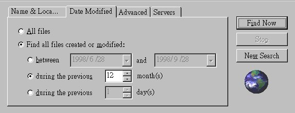
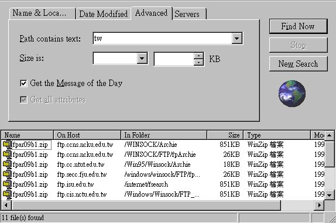
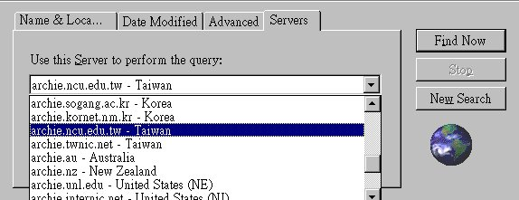
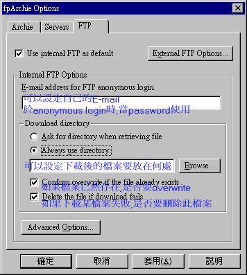

Date Modified 標 籤
可 藉 此 標 籤 設 定 尋 找 " 在 某 段 時 間 內 修 改 過 的 檔 案 ."
此 例 為 尋 找 最 近 一 年 所 修 改 的 檔 案 :

Advanced 標 籤
下 載 檔 案 時 , 選 一 個 離 你 最 近 的 Sever , 如 此 可 加 快 速 度 .
故 在 此 標 籤 中 , 你 可 以 設 定 你 要 在 那 個 特 定 地 區 內 搜 尋 所 要 尋 找 的 檔 案 .
此 例 為 尋 找 台 灣 區 域 的 檔 案 .

Severs 標 籤
如 果 無 法 找 到 你 所 要 尋 找 的 檔 案 , 可 使 用 不 同 的 Server 來 查 詢 .

其他有關Ftp的設定
